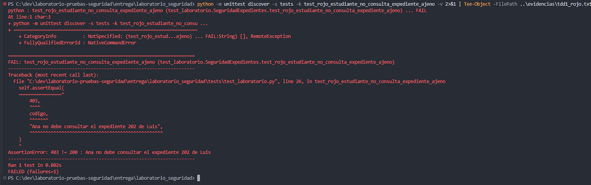
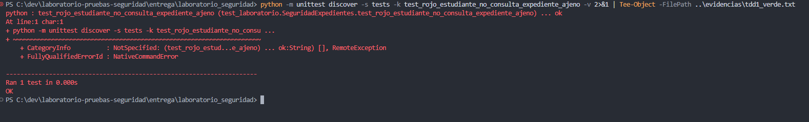
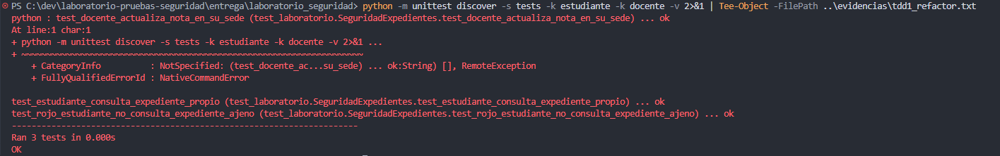

SEC-01 y SEC-05 · TC-04 · H-01 · Wilberth Guillen. Registro de las tres fases con identificación RGB. Las capturas y salidas originales se conservan sin modificaciones.
Una prueba falló porque se esperaba 403 y se obtuvo 200.
Salida original · Cambio de la prueba · Captura a tamaño original

Una prueba aprobada: se deniega la lectura, no aparecen campos protegidos y los expedientes permanecen intactos.
Salida original · Cambio mínimo · Captura a tamaño original

Tres pruebas relacionadas aprobaron después de extraer la condición. La suite completa conservó el fallo conocido de sesión revocada, que corresponde al bloque pendiente de Jania.
Regresión relacionada · Cambio de estructura · Suite completa y fallo pendiente · Captura a tamaño original

Descripción completa y limitaciones: registro del ciclo TDD. El resumen no acredita el segundo ciclo ni la aprobación final del producto.